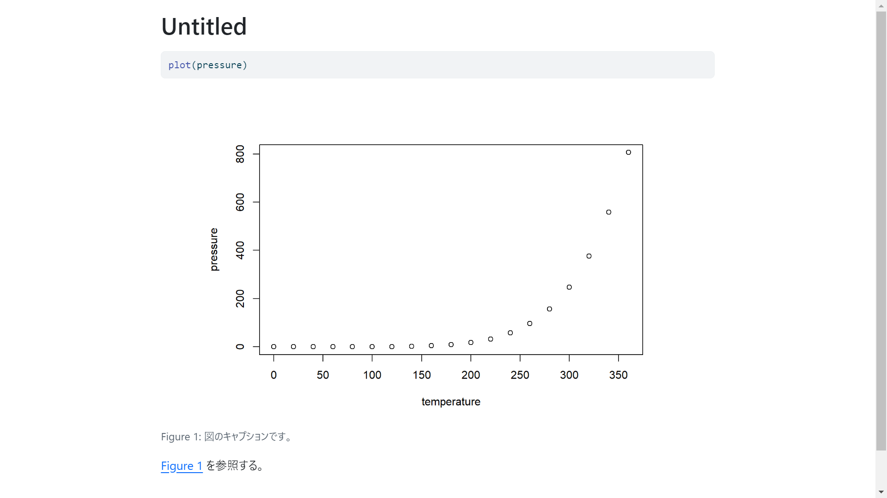

【R Markdown】相互参照を使いこなす【Quarto】
R Markdown
Quarto
R
図や表に自動で番号を振りたい！
はじめに
R Markdown や Quarto で文書を書いているとき、相互参照をどうしようと思ったことはありませんか？僕はありました。
手書きで「図1：Hogehoge」と書くとなんだかスマートさに欠けるし、前に図を挿入したくなった時に数字を書き換えなければならず不便ですよね。
今回は R Markdown ＆ Quarto における相互参照の使い方をご紹介します。
R Markdown と Quarto で設定が異なりますので、それぞれ見ていきましょう。
R Markdown
YAML ヘッダー
まず、新しいファイルを開くと出てくる --- で囲まれた部分を、YAML ヘッダーと呼びます。

R Markdown はデフォルトでは相互参照が使えません（私調べ）（そんな馬鹿な）。そのため、パッケージを使って設定します。
デフォルトの設定はこのような感じになっています。
YAML ヘッダー
---
title: "Untitled"
author: "Yosuke Abe"
date: "2024-08-03"
output: html_document
---これを bookdown パッケージを用いて変更します。
まずはインストール。
R
install.packages("bookdown")次にヘッダーを次のように変更。
YAML ヘッダー
---
title: "Untitled"
author: "Yosuke Abe"
date: "2024-08-03"
output:
bookdown::html_document2: default
---これで準備が整いました。
相互参照
では何かプロットして、それを参照してみましょう。例えば次の図をプロットしたいとします。
これを参照するために R Markdown 内で入力すると次のようになります。
R Markdown
```{r pressure, fig.cap="図のキャプションです。"}
plot(pressure)
```ここでのポイントは、{r pressure} の部分です。デフォルトでは {r} だけだと思いますが、スペースを空けることでチャンク1に名前を付けることができ、このチャンク名を使って参照します。また、カンマで区切った後の fig.cap は図のキャプションです。
文中で参照したいときは、次のように書きます。
R Markdown
表 \@ref(fig:pressure) を参照する。すると…
このように、文中での参照ができます。前に新たに図が入っても、自動で番号を振り直してくれます。
図以外の場合
もちろん、表や数式の場合にも使えます。
表の場合
様々な表の関数がありますが、R Markdown では基本的に関数内でキャプションを付けます。
図の場合とは違い、参照の際には
tab:を使います。
Quarto
```{r mtcars}
knitr::kable(mtcars[1:5, 1:5], caption = "mtcars データ")
```
表 \@ref(tab:mtcars) を参照する。数式の場合
\(\LaTeX\) 形式で書きます。HTML 出力でも、この書き方が可能です。
$で挟む方法もありますが、これだと参照ができません2。参照の際には、
eq:を使います。
Quarto
\begin{equation}
\bar{X} = \frac{\sum_{i=1}^n X_i}{n} (\#eq:mean)
\end{equation}
式 \@ref(eq:mean) を参照する。以上のやり方で表や数式の参照にも対応しています。
Quarto
Quarto もほとんど同じ方法で参照が可能ですが、書き方はもっとシンプルです。
YAML ヘッダー
YAML ヘッダー
---
title: "Untitled"
format: html
---デフォルトでは著者も日付もないのでめちゃくちゃシンプルですね3。
Quarto では、相互参照のためにこれをいじる必要はありません（素晴らしい！）。
その代わり、チャンクの方をいろいろいじっていきます。
チャンクオプション
改めてになりますが、``` で囲まれたコード部分をチャンクと言います。
R Markdown では、{r}の中にチャンク名を書きましたが、Quarto ではチャンクの中に書いていきます4。
R Markdown
```{r}
#| label: fig-pressure
#| fig-cap: "図のキャプションです。"
plot(pressure)
```ポイントは以下の2つです。
#|の後ろにオプションを指定して書くことができます。labelはfig-で始めないと参照できません。
相互参照
文中では以下のように書いていきます。
Quarto
@fig-pressure を参照する。@ だけだなんて、なんてシンプルなのでしょう。以下のように出力されます。

とても簡単に引用できました。よく見ると、図 @fig-pressure とは書かずとも Figure 1 となっています。図～とは書かなくてよいということですね。英語になっているのが気になる方は、後のセクションで解説しているのでご覧ください。
図以外の場合
もちろん、表や数式の場合にも使えます。
表の場合
Quarto では、表もチャンクオプションを使ってキャプションがつけられます。
R Markdown では、参照の際に
tab:を使っていたのに対し、Quarto ではtbl-となります。ややこしい！
Quarto
```{r}
#| label: tbl-mtcars
#| tbl-cap: "mtcars データ"
knitr::kable(mtcars[1:5, 1:5])
```
@tbl-mtcars を参照する。数式の場合
\(\LaTeX\) 形式でも書けますが、
$$で囲む方法が便利です。数式自体は \(\LaTeX\) 表記です。
自分で打ってみるとわかりますが、プレビューできるのもいい点です。
Quarto
$$
\bar{X} = \frac{\sum_{i=1}^n X_i}{n}
$$ {#eq-mean}
@eq-mean を参照する。以上のやり方で表や数式も参照できます。
言語の設定について
特に Quarto で、@fig- で参照すると Figure ~ となってしまう問題について、気になる方は次の設定で修正できます。
YAML ヘッダー
---
title: "Untitled"
format: html
lang: ja
---lang: ja を追加しました。これが日本語設定です。
これを設定したうえで実行すると、
無事日本語にできました。表や式もこれでいけます。
おわりに
今回は R Markdown と Quarto で相互参照を使う方法をご紹介しました。
相互参照が簡単にできるだけで、かなり Markdown を使う魅力が増すと思います。修士学生の私としては、Quarto で修論を書き上げるのが目標です^^
ご参考になれば幸いです。それでは。